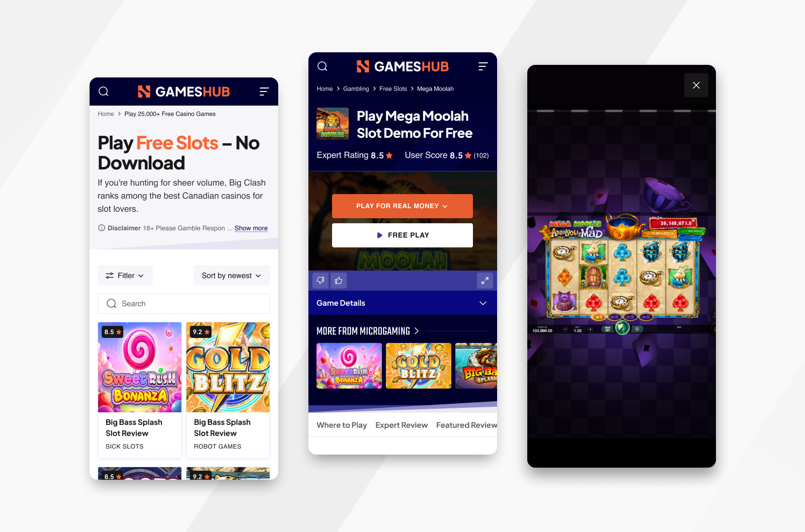

Casino Game Demo
Redesigning the demo-to-player pipeline to increase casino conversions through immersive gameplay and expert reviews.
Figma, Mixpanel, Hotjar, A/B Testing
2 months

My Role
- Lead UI/UX Designer for the game interface and landing pages.
- Developed a high-conversion "Play-to-Register" user flow.
- Created a modular UI kit for rapid deployment of new game titles.
- Collaborated with stakeholders to align affiliate goals with user experience.
The Problem
The original GamesHub demo pages had high traffic but low conversion rates to partner casino sites. Users would play the free demo and then leave. The "Key Info" and "Expert Reviews" were buried at the bottom of the page, meaning users rarely saw the incentives (bonuses or unique features) that would encourage them to join a real-money casino hosting the game.
Research & Insights
Through heatmaps and user recordings, I discovered that users were highly engaged during the first 60 seconds of gameplay but dropped off immediately after the demo ended. Key findings included The "Dead End": Once a demo session finished, there was no clear call-to-action (CTA). Information Overload: The technical game data (RTP, Volatility) was presented in a dry table that users ignored. Trust Gap: Users wanted to know where it was safe to play for real money without having to search for it themselves.
Ideation & Strategy
The strategy shifted from just "hosting a game" to "guiding a journey." I focused on three entry points for conversion: In-Game Prompts: Introducing subtle, non-intrusive CTAs during big "win" moments in the demo. The Sidebar/Overlay: Redesigning the "Key Info" into a sticky "Cheat Sheet" that highlights the best UK casino offers for that specific game (e.g., "Play this at [Casino Name] for £50 Bonus"). Contextual Reviews: Breaking the long-form review into digestible snippets placed alongside the game window to build trust while the user is still playing.
Design & Testing
I implemented a dark-mode aesthetic to mimic a premium casino environment. I replaced the static "Join Now" buttons with dynamic "Live Offers" that updated based on the user's location. Testing results showed: The Sticky Sidebar: Users interacted with the "Key Game Info" 40% more when it was moved from the footer to a right-hand sidebar. The "Play for Real" Toggle: Adding a prominent toggle switch above the game window increased click-through rates to casino partners by 22%.


Outcome
Following the redesign, GamesHub saw a 28% increase in successful referrals to partner casino websites. The average time spent on the page increased by 1 minute, as users stayed to read the integrated reviews. The project was scaled across 50+ game titles using the new modular design system.
What I Learnt
This project taught me the delicate balance between entertainment and conversion. In the gambling industry, user trust is the most valuable currency; by providing clear, honest game data and reviews alongside the gameplay, we created a much more effective lead-generation tool.